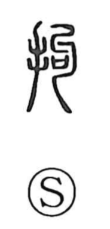

拘

Uncategorized
Kun: kodawaru | On: kou
to arrest ・ to detain ・ to restrain ・ to seize
Explanation
A phono-semantic compound: the hand on the left signals the act of grasping, while the right component, originally a graph depicting a bent, hooked form, supplies the sound (kō) and the idea of bending. In ancient writing this right-side element is tied to a ritual receptacle used for covenant texts offered to the deities, imagery that also connects with burial practices in which the body was interred with limbs drawn up—an idea visible in related graphs for “bending.” With the hand added, the character depicts seizing a person and pressing the body until it yields, which gives rise to the meanings arrest, restrain, suppress, and by extension bend.